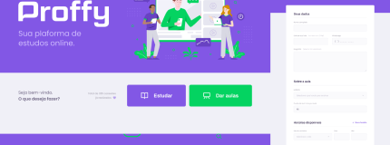
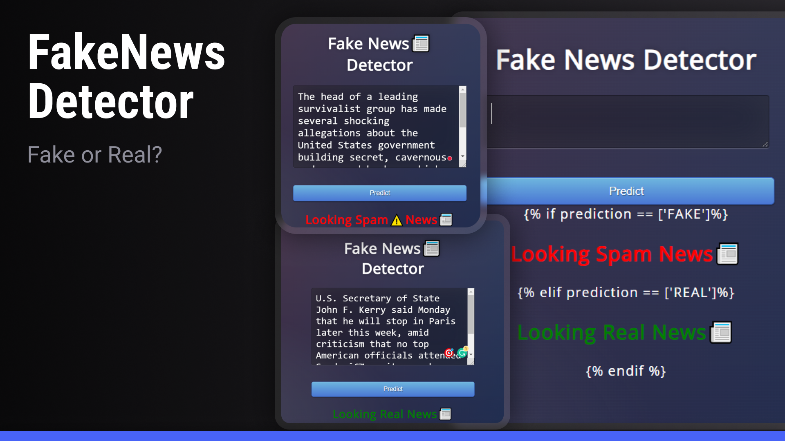
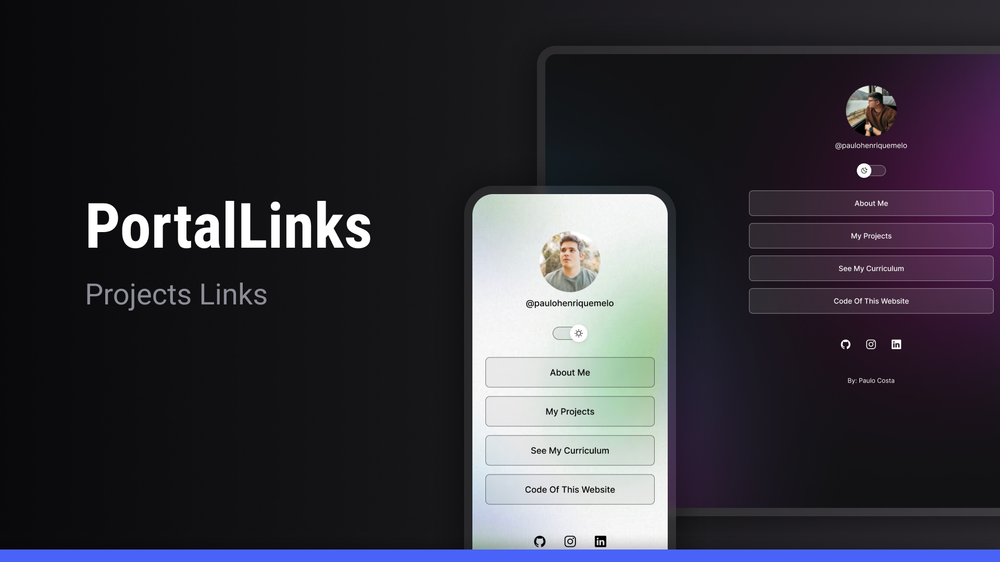
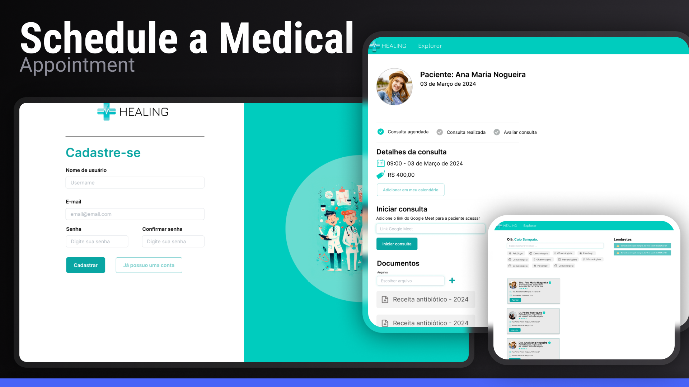

@paulohenriquemelo
Developed with HTML, CSS, and JavaScript, this web application aims to be a study platform. Teachers and students can register to offer or participate in classes.

- See the app's code above
The application was developed for academic purposes, aiming to interact with social media users who may be exposed to fake news. Based on a dataset model, the application allows users to input a news headline and verify its authenticity. The response is provided with an accuracy based on a model trained using machine learning techniques.

- See the app's code above
An app designed to create a portal that brings together all your key links in one place—whether it’s social media, websites, or anything else. The goal is to make it super easy for users to navigate and access someone’s main platforms, just like LinkTree. Built with HTML, CSS, and JavaScript.

- See the app's code above
Application developed using the Django framework with Python, HTML, CSS, and JavaScript, integrated with an SQLite database. The goal was to create a graphical interface for managing medical appointments, offering two main perspectives: one for patients to schedule their appointments and another for doctors to view their schedules and booked consultations.

- See the app's code above
My Projects
Proffy - Study Platform
Fake News Detector - Python
Portal Links - WEB
Appointment - WEB / APP